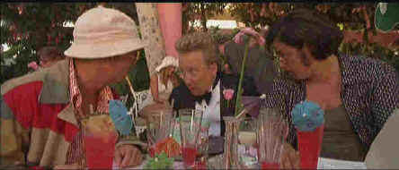

Universal/1998/119m/ANA, WS 2.35
Raoul Duke AKA Hunter Thompson is assigned to cover a motorcycle race outside Las Vegas for his magazine. He and his wacked-out attorney, Dr. Gonzo, make the trip by convertible from Los Angeles armed with a wild assortment of drugs. Abusing each other as well as the drugs, the great miracle of this film is how either of these characters managed to live to see the light of another day. If the drugs didn’t put them down for the count, how come no well meaning citizen didn’t end their trip unceremoniously? They move through Las Vegas casinos with all the abandon of a drunk falling down a staircase, somehow surviving unscathed. Assaulting customers with improbable results, the pair goes from one drug to another, from one hotel to another, in an intolerable frenzy of disgust.
Johnny Depp inhabits the role of Thompson, delivering a film noirish narration that is clearly the best thing about the film. Watching him is another matter. Using his body like a lump of clay, Depp bends his legs, contorts his body in a strange gait, tilts his head at ridiculous angles, and presents a picture of a man walking in one world while tripping in another. Like everything else about the movie, Depp’s physical portrait becomes difficult to watch in short order. Benecio Del Toro, playing Dr. Gonzo, is in perfect synch with Depp. His outrageous performance lets it all hang out, especially the forty pounds of midriff beef he added for the role.
Terry Gilliam is a bold and brazen filmmaker. This was not a project he initiated, but he did I undertake it with the usual Gilliam enthusiasm. This time, the imaginative director lets the material run away from him, overtake his sense of style, and the result is a movie that is often unwatchable.
 |
A cocktail before the assault on Las Vegas.©Universal |
This is one loud DVD. Delivered in Dolby Digital 2-channel sound, Fear and Loathing in Las Vegas lacks any subtlety, blaring stridently in harsh harmony with the assaulting visual presentation. The sound is a distressing misdirected hash. The widescreen anamorphic 2.35 images are very sharp and the DVD delivers the interesting and difficult color palette with aplomb. The neon of Las Vegas glitters brightly, the night skies reflect the gaudy insanity of the setting. Included in the DVD presentation are a few deleted scenes and a short promotional film that includes observations from cast and crew about the film. Fear and Loathing in Las Vegas is one trip I do not recommend taking, but then, lots of people have been down the road on ill-advised trips.